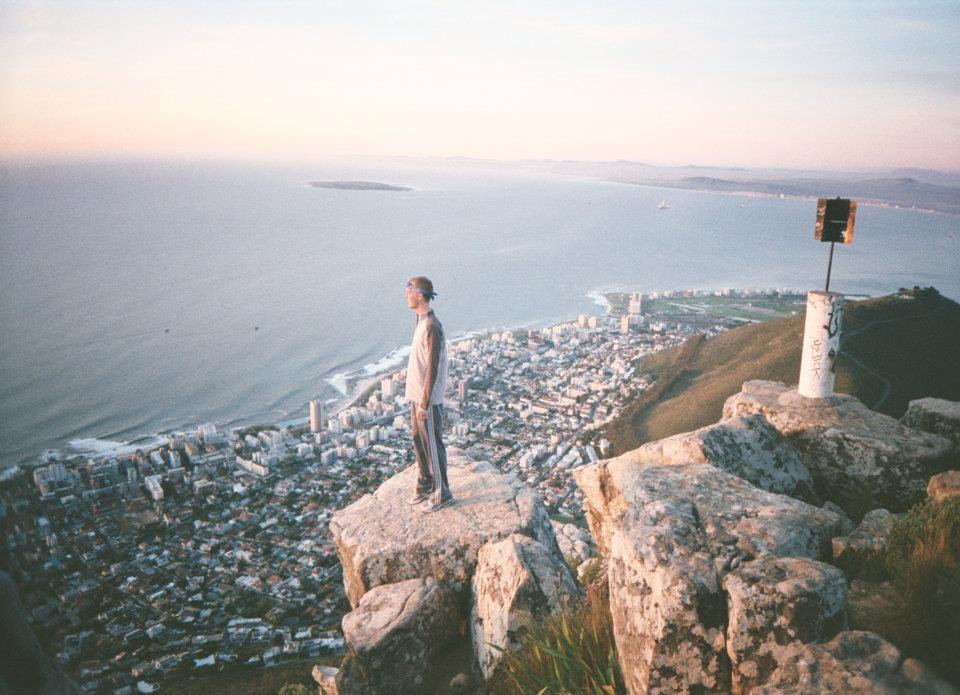

Africa
lizzie's contribution
for more info click here
Cape Town
A very cosmopolitan city at the foothills of beautiful mountains and also right on the water. It's a hub of an amazing mix of cultures, art, music, and food. It's the best vacation for someone who wants to lay on the beach in the lap of luxury, but also do some fun activities!
A sample itinerary
Day 1 breakfast somewhere cute on Kloof St or Long St, hike table mountain! Or head to the Clifton beaches if you want something more low key. Then head to the Nelson Mandela museum. Catch Happy hour and dinner on the waterfront to round out a fun day!
Day 2 go wine tasting in stellenbosch! Get a driver from Cape Town or take the train and hop on a bus tour. Hit up some beautiful vineyards and enjoy the view-- but don't drive home :) your choice of dinner that night: trendy and urban on Long st, quaint and quiet in Kalk Bay, or ritzy on Clifton beach.
Day 3brunch at Old Biscuit Mill if it's a Saturday. Shop on Long St, take a driving tour of the whole peninsula, take a romantic drive on Chapman's peak, visit the University of Cape Town (it's beautiful!). Sunset hike on Lion's head and have dinner at Hout Bay market (food stalls with live music and good food).
Food Thoughts: Old biscuit mill- everything, mushroom kabob. Great food stalls for brunch, drinks, and shopping! Saturday morning/ afternoon
Hout Bay market - every stall is so delicious (thurs- sat evening)
And if you have any time to spare:
If you're able, try to plan a trip up the Garden Route for at least 4 days. Make stops along the route - the hostels are gorgeous.
If you have extra time, fly to Kruger (or Johannesburg and drive into the park) and go on a safari. It's amazing and very worth it. You won't get wild animals in Cape Town!
Use minibuses, they're very safe.
Favorite Cape Town Activities
Lions head hike at sunset
Table mountain at sunset
Wine tasting in stellenbosch
Shopping on Kloof and long st
Going to a rugby game
Brunch at old biscuit mill
Nelson Mandela museum
Walking up to UCT and looking out at the whole city
Chain and peak drive (v romantic)
Walking on the promenade in green point
So many coffee shops!